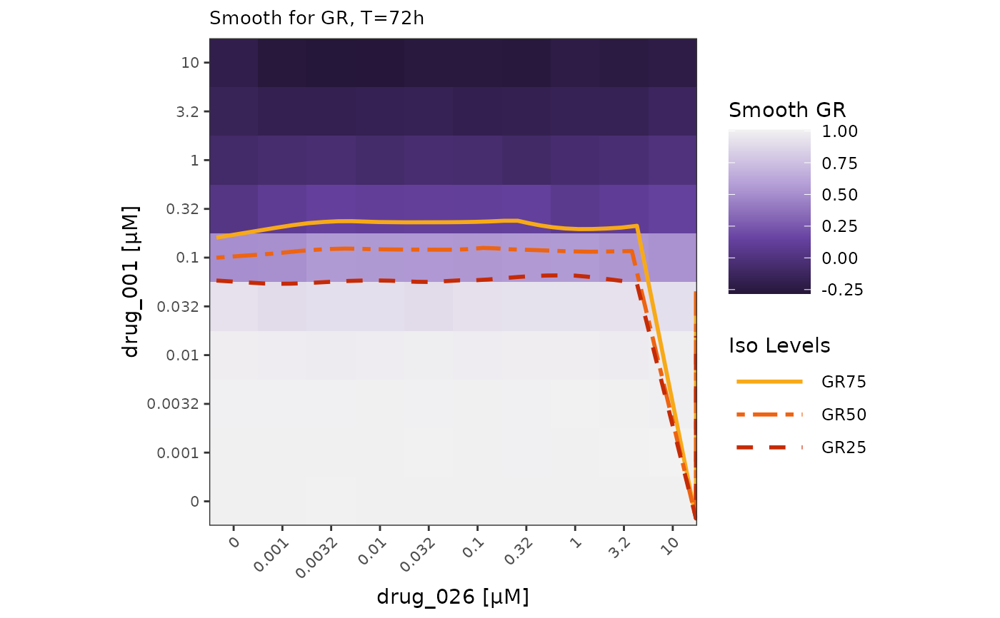
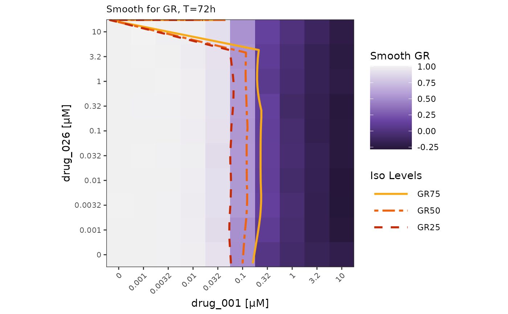
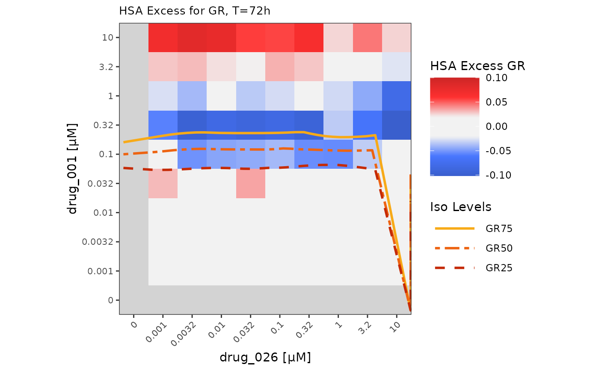
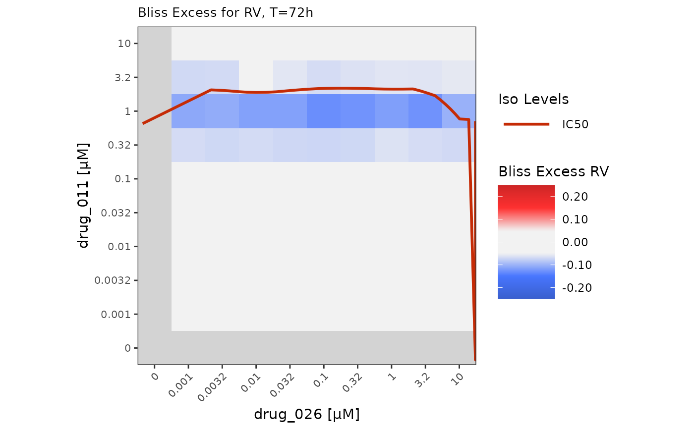
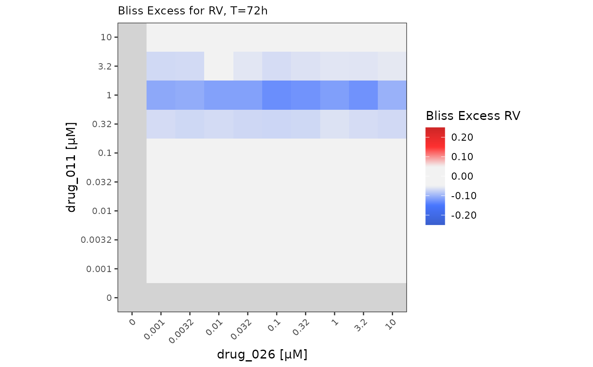

Plot heatmaps of fitted values for combination metrics data
heatmap_combo_metrics.RdPlot heatmaps of fitted values for combination metrics data
Usage
heatmap_combo_metrics(
dt_excess,
dt_isobolograms = NULL,
drug1_name,
drug2_name,
cl_name,
metric = "smooth",
normalization_type = "GR",
iso_levels = c("0.25", "0.5", "0.75"),
colors_vec_smooth = NULL,
colors_vec_excess = NULL,
limit = NULL,
no_breaks = 50,
swap_axes = FALSE,
show_values = FALSE
)Arguments
- dt_excess
data.table representing data from the
excessassay, outputted bygDRutils::convert_se_assay_to_dt(se, "excess")and comboSummarizedExperiment- dt_isobolograms
data.table representing data from the
isobologramsassay, outputted bygDRutils::convert_se_assay_to_dt(se, "isobolograms")and comboSummarizedExperiment- drug1_name
string with drug name to be plotted (identifiers
DrugName)- drug2_name
string with co-drug name to be plotted (identifiers
DrugName_2)- cl_name
string with cell line to be plotted (identifiers
CellLineName)- metric
string name of combo metric; one of: "smooth"("Smooth GR" or "Smooth RV" - respectively depending on
normalization_type), "hsa_excess"("Bliss Excess GR" or "Bliss Excess RV") or "bliss_excess" ("Bliss Excess GR" or "Bliss Excess RV")- normalization_type
string with normalization_types to be selected one of: "GR" ("GRvalue") or "RV" ("RelativeViability")
- iso_levels
character vector with isobologram levels to be selected
- colors_vec_smooth
character vector of colors (valid names or hex codes) used in the heatmap for smooth values; the default is the dark purple-light grey palette
- colors_vec_excess
character vector of colors (valid name or hex codes) used in the heatmap for excess values; the default is the blue-light grey-red color scale
- limit
numeric vector of length two providing limits of the scale. Use NA to refer to the existing minimum or maximum
- no_breaks
numeric number of breaks on scale
- swap_axes
logical flag indicating whether to swap the axes with drugs of the heatmap
- show_values
logical flag indicating whether to show values of the metric on the heatmap
Value
ggplot object containing heatmap with the values for the selected combo metric
for selected drugs and cell line with selected isoline (when chosen)
Examples
cl_name <- "cellline_BC"
drug1_name <- "drug_001"
drug2_name <- "drug_026"
mae <- gDRutils::get_synthetic_data("combo_matrix")
se <- mae[[gDRutils::get_supported_experiments("combo")]]
dt_excess <- gDRutils::convert_se_assay_to_dt(se, "excess")
dt_isobolograms <- gDRutils::convert_se_assay_to_dt(se, "isobolograms")
heatmap_combo_metrics(dt_excess,
dt_isobolograms,
drug1_name, drug2_name,
cl_name,
normalization_type = "GR")

heatmap_combo_metrics(dt_excess,
dt_isobolograms,
drug1_name, drug2_name,
cl_name,
normalization_type = "GR",
swap_axes = TRUE)

heatmap_combo_metrics(dt_excess,
dt_isobolograms,
drug1_name, drug2_name,
cl_name,
metric = "hsa_excess",
normalization_type = "GR",
limit = c(NA, 0.1))

cl_name <- "cellline_JE"
drug1_name <- "drug_011"
drug2_name <- "drug_026"
heatmap_combo_metrics(dt_excess,
dt_isobolograms,
drug1_name, drug2_name,
cl_name,
metric = "bliss_excess",
normalization_type = "RV",
iso_levels = "0.5")

heatmap_combo_metrics(dt_excess,
dt_isobolograms,
drug1_name, drug2_name,
cl_name,
metric = "bliss_excess",
normalization_type = "RV",
iso_levels = NULL)
